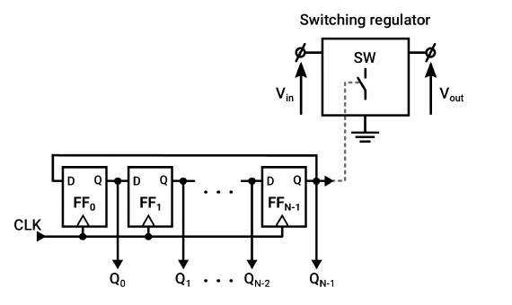
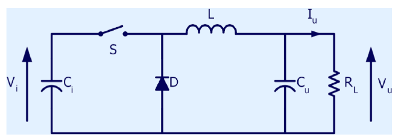

33. Impulsli (switching) stabilizator: PWM va buck
1. Muammo: chiziqli stabilizator issiqlik chiqaradi
Stabilizator (regulator) = kirish kuchlanishi o'zgarsa ham chiqishda doimiy kuchlanish beradigan sxema. Masalan 12 V dan 5 V olish.
Chiziqli (linear) stabilizator ortiqcha kuchlanishni tranzistorda "yoqib" yuboradi: kirish toki ≈ chiqish toki, ortiqcha (VI − VO)·I issiqlikka aylanadi. Shuning uchun:
Chiziqli: η = PO / PI ≈ VO / VIMasalan 12 V → 5 V: η ≈ 5/12 = 42%. Qolgan 58% issiqlik.
Impulsli (switching) stabilizator kalitdan foydalanadi. Ideal kalit ikki holatda bo'ladi:
- ON (yopiq): ustidagi kuchlanish 0 → quvvat 0·I = 0.
- OFF (ochiq): toki 0 → quvvat V·0 = 0.
Demak ideal kalit hech qanday quvvat yo'qotmaydi: η = 1. Haqiqiy sxemada η ≈ 0.8…0.9.
| Chiziqli | Impulsli | |
|---|---|---|
| Samaradorlik η | ≈ VO/VI (past) | ≈ 1 (0.8…0.9) |
| Chiqish | toza, ripple kam | ripple bor |
| Shovqin (EMI) | kam | ko'p (tez o'tishlar) |
2. PWM va duty cycle D
Kalit davriy ravishda yoqib-o'chiriladi: T davr ichida TON vaqt yoqiq, TOFF vaqt o'chiq. Bu PWM (Pulse Width Modulation, impuls kengligi modulyatsiyasi).
D = TON / (TON + TOFF) = TON / T (0 ≤ D ≤ 1)Bu to'g'ri burchakli to'lqindan bizga faqat o'rtacha qiymat kerak. Qolgan tez o'zgarishlarni past chastota filtri (low-pass filter) olib tashlaydi. Kichik quvvatda RC filtr (arzon, R da yo'qotish), katta quvvatda LC filtr (yo'qotish kam).
3. Induktivlik L: tokni "ushlab turadi"
Induktivlik (g'altak, inductor, L) = sim o'rami. Uning asosiy xususiyati: toki sakrab o'zgarmaydi. Kuchlanish berilsa, tok asta-sekin, chiziqli o'zgaradi:
ΔIL = VL · ΔT / LVL musbat bo'lsa tok o'sadi, manfiy bo'lsa kamayadi. Kvadrat kuchlanish berilsa, tok uchburchak bo'ladi.
4. Buck stabilizator (pasaytiruvchi, VO < VI)
Buck da ikkita kalit bor, ular navbat bilan ishlaydi: SW1 (asosiy) D vaqt yoqiq, SW2 (1 − D) vaqt yoqiq. SW2 ko'pincha diod bilan almashtiriladi (zamonaviy sxemalarda MOS tranzistor).
- ON holat (D·T vaqt): SW yopiq, diod teskari ulangan (tok o'tmaydi). L ga VL = VI − VO > 0 tushadi → tok o'sadi: ΔI = (VI − VO)·TON / L.
- OFF holat ((1 − D)·T vaqt): SW ochiq. L tokni to'xtatmaydi, tok faqat diod orqali o'ta oladi (diod "o'zi" yoqiladi). L ga VL = −VO < 0 → tok kamayadi: ΔI = −VO·TOFF / L.
VO = D·VI formulasi qayerdan
Barqaror ishda bir davrda tok qancha o'ssa, shuncha tushadi (aks holda tok cheksiz o'sardi). O'sish + kamayish = 0:
(VI − VO)·TON / L + (−VO)·TOFF / L = 0L qisqaradi: VI·TON = VO·(TON + TOFF), ya'ni
VO / VI = TON / T = D → VO = D · VID ≤ 1 bo'lgani uchun VO ≤ VI. Muhim: ideal holda (uzluksiz tok rejimida, CCM) VO faqat D ga bog'liq: L, C, yuklama, chastota, diod xususiyatlari formulada yo'q.
5. Teskari aloqa bilan stabillash
VI o'zgarsa VO ham o'zgaradi (VO = D·VI). Chiqishni doimiy ushlash uchun D avtomatik sozlanadi:
6. Haqiqiy buck: yo'qotishlar
- Kalit: RON ≠ 0 (yoqiqda), IOFF ≠ 0 (o'chiqda), o'tish paytida MOS chiziqli sohada ishlaydi.
- Diod: VD ≠ 0, teskari tok IS ≠ 0.
- L: ketma-ket qarshilik RL, o'zakdagi yo'qotish.
- C: ekvivalent ketma-ket qarshilik (ESR).
Natija: η < 1, lekin yaqin (0.8…0.9); yo'qotishlar chastotaga ham bog'liq. Bu hamma impulsli stabilizatorlarga tegishli.
7. Slayddagi mashq Ee5
Shart: VO < VI bo'lgan impulsli stabilizator sxemasini chizing (= buck). VI 8 V dan 15 V gacha o'zgaradi, VO = 5 V kerak. D chegaralarini toping.
Yechim: D = VO/VI.
- VI = 15 V: D = 5/15 = 0.33 (eng kichik).
- VI = 8 V: D = 5/8 = 0.625 (eng katta).
(b) qism: haqiqiy kalitda VCEsat va RON da kuchlanish tushadi, shuning uchun bir xil VO uchun D biroz kattaroq bo'lishi kerak.
8. Imtihon masalasi: 2020-09 (7 ball)

"The switch of an ideal buck switching regulator is controlled by the output QN-1 of the logic circuit shown in the figure below. The switch of the regulator is "ON" when QN-1 is at the logic level one and "OFF" when QN-1 is at the logic level zero. The input voltage to the switching regulator is Vin = 5.6 V, the frequency of the clock (CLK) signal is fCLK = 420 kHz, and the number of D flip-flops is N = 5. What is the magnitude of the output voltage of the switching regulator, Vout = ? V, [6 points] when the initial states of the outputs Qi, i ∈ {0, …, 4}, of the circuit are: Q2 = 1, Q3 = 1, and logic zero for all other outputs. How does the output voltage, Vout, change if both the clock frequency, fCLK, and the input voltage, Vin, double their values at the same time [1 point]: increases two times / decreases two times / increases four times / decreases four times / unchanged, it is regulated"
Tarjima: buck kaliti QN-1 = 1 bo'lsa yoqiq. VI = 5.6 V, fCLK = 420 kHz, N = 5 flip-flop. Boshida Q2 = Q3 = 1, qolganlari 0. Vout = ? fCLK va Vin ikkalasi ikki baravar oshsa Vout qanday o'zgaradi?
Javob (yechim)
1. Sxema nima: flip-flop lar ketma-ket (9-darsdagi siljitish registri), oxirgi chiqish QN-1 birinchi kirishga qaytadi. Bu halqa registr (ring): bitlar aylanib yuradi, hech biri yo'qolmaydi.
2. Davr: har taktda bitlar bir pog'ona suriladi, N = 5 taktdan keyin holat takrorlanadi. Ichida ikkita "1" bor, demak Q4 5 taktdan 2 tasida "1".
3. Duty cycle: D = 2/5 = 0.4.
4. Buck: Vout = D · Vin = 0.4 · 5.6 = 2.24 V.
5. Ikkinchi savol: Vout chastotaga bog'liq emas (D o'zgarmaydi, faqat tezroq aylanadi), lekin Vin ga proporsional. Vin ikki baravar → Vout ikki baravar: "increases two times". (Bu yerda teskari aloqa yo'q, shuning uchun "regulated" emas.)
9. Imtihon test savollari (asl matn bilan)
003. For an ideal buck power regulator, the output voltage can be: a) higher than or equal to the input voltage b) higher than the input voltage c) lower than or equal to the input voltage d) lower than the input voltage
Javob
c) VO = D·VI, D ≤ 1 (D = 1 da teng).
030. The voltage gain of a buck regulator with duty cycle D = 0.75 is: a) 0.75 b) 0.25 c) 1.33 d) 4
Javob
a) 0.75 (VO/VI = D).
091. The voltage gain of a buck regulator with duty cycle D = 0.25 is: a) 0.75 b) 0.25 c) 1.33 d) 4
Javob
b) 0.25.
114. The transfer function in continuous current mode of an ideal buck power regulator depends on: a) the value of the inductance b) the characteristics of the diode c) the switch duty cycle d) the value of the load
Javob
c) VO/VI = D, faqat duty cycle.
101. The schematic below represents: a) a flyback power regulator circuit b) an on-off load control circuit with a diode c) a buck power regulator circuit d) a voltage regulator with a Zener diode

Javob
c) buck. Belgisi: kalit kirishdan ketma-ket, keyin diod yerga, keyin L ketma-ket chiqishga.
116. A buck power regulator injects noise: a) more in the output circuit b) more in the input circuit c) equivalent in both input and output circuits d) operates smoothly, not relevant noise
Javob
b) more in the input circuit. Buck da kalit kirishga ketma-ket: kirish toki impulsli (0 yoki IL). Chiqishda L tokni tekis ushlaydi.
061. Compared to a linear regulator, a switching regulator allows to: a) increase the stability of the output voltage b) increase the efficiency of the regulator c) simplify the regulator circuit d) increase the accuracy of the output voltage
Javob
b) samaradorlik yuqori.
028. The efficiency (ratio of output power/input power) of a linear series regulator with VI input and VO output is approximately: a) VI / VO b) VO / VI c) 0.5 d) VO / (VI + VO) 034 (xuddi shu savol): a) Vout / Vin b) 1 c) Vin / Vout d) (Vin / Vout)2
Javob
028 → b) VO/VI; 034 → a) Vout/Vin. Chiziqli stabilizatorda IO ≈ II.
- Buck, VI = 24 V, VO = 3.3 V kerak. D = ?
- Halqa registr N = 8, ichida uchta "1". Buck VI = 12 V. VO = ?
- Buck da ON holatda L dagi kuchlanish qancha?
Javoblar
- D = 3.3/24 = 0.1375 ≈ 0.14.
- D = 3/8, VO = 12·3/8 = 4.5 V.
- VL = VI − VO (musbat, tok o'sadi).
Yangi atamalar
| Atama | Inglizchasi | Ma'nosi |
|---|---|---|
| Stabilizator | regulator | Doimiy chiqish kuchlanishi beruvchi sxema |
| Chiziqli stabilizator | linear regulator | Ortiqchani tranzistorda yoqadi, η ≈ VO/VI |
| Impulsli stabilizator | switching regulator, dc-dc converter | Kalit + L + C, η ≈ 1 |
| Samaradorlik | efficiency η | PO / PI |
| Duty cycle | duty cycle D | TON / T |
| PWM | pulse width modulation | Impuls kengligi bilan boshqarish |
| Induktivlik | inductor L | Tokni sakratmaydi: ΔI = VL·ΔT/L |
| Buck | buck (step-down) | Pasaytiruvchi: VO = D·VI |
| Uzluksiz tok rejimi | continuous current mode (CCM) | L toki hech qachon 0 ga tushmaydi |
| Teskari aloqa | feedback (reaction) | Chiqishni o'lchab D ni sozlash |
| Ripple | ripple | Chiqishdagi kichik tebranish |
| Halqa registr | ring (circular shift) register | Oxirgi chiqish birinchi kirishga ulangan |
📝 Konspekt (daftarga yozib oling)
- Ideal kalit quvvat yo'qotmaydi (ON: V = 0, OFF: I = 0).
- CCM da VO/VI faqat D ga bog'liq (L, C, yuklama, chastota, diod emas).
- Buck: shovqin kirishga. Kamchilik: ripple, EMI.
- Yo'qotishlar: RON, IOFF, VD, RL, ESR, o'tishlar.
- Javoblar: 003 → c; 030 → a; 091 → b; 114 → c; 101 → c; 116 → b; 061 → b; 028 → b; 034 → a; Ee5 → D = 0.33…0.625; 2020-09 → D = 2/5, 2.24 V, "increases two times".